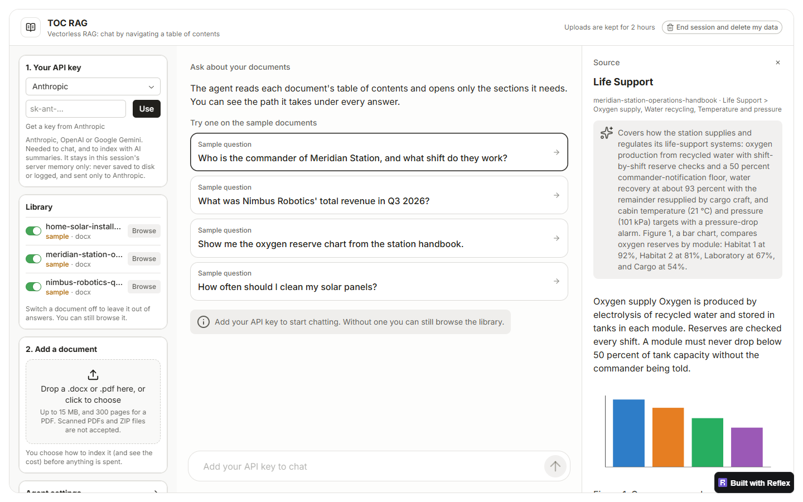

TOC-RAG
Retrieval without vectors. Instead of chunking and embedding, it reads a document the way a person would: through its table of contents.
- Builds a section tree from Word headings, PDF bookmarks or the printed contents page, then summarizes each section
- An agent opens, reads and backs out of sections, and you can watch the path it takes
- Answers cite only sections the agent actually read, with a cost preview before indexing
- Python
- LangGraph
- Reflex
- Claude · GPT · Gemini